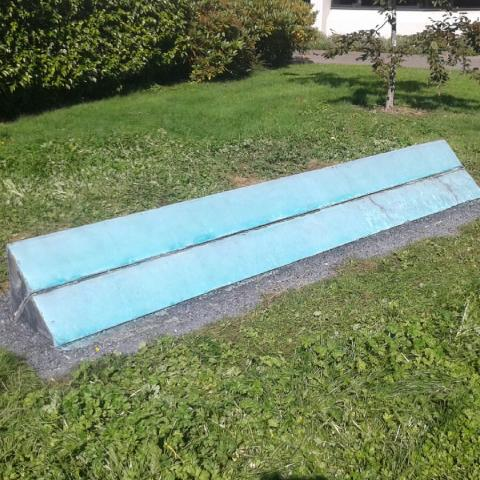
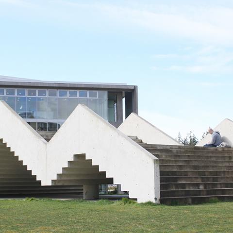
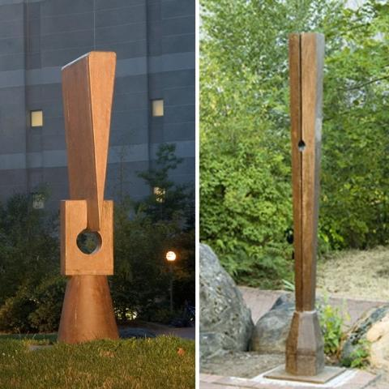

Sculptures Near the E-Sci Building

Flank II
- Mia Westerlund Roosen, 1978.
- Concrete, steel, copper. 1 1/2' h. x 12' l.
- Roosen’s early sculptures combine Minimalist geometric
forms with improvised finishing. Instead of the smooth,
industrially machined surfaces that still predominated
abstract sculpture in the 1970s, Flank II has the
surface qualities of painting. The concrete wedge is
faced with two sheets of copper, edged by natural
oxidation to create variegated fields of color with a
textured line of pigmented concrete in between.

Stadium Piece
- Bruce Nauman, 1989-90.
- Concrete, tinted white. 13' h. x 25' w. x 50' l.
- To Nauman, art is a philosophical inquiry into “the
possibilities of what art might be.” His works make
viewers think about what they know and don’t know,
what they see and don’t see. Here Nauman inverts an
ordinary notion—instead of overlooking a ballpark,
this stadium is itself a playing field where
everyone is invited to participate.

Normanno Column and Wedge
- Beverly Pepper, 1980.
- Cast iron. Column: 7' 3" h. Wedge: 102' x 11.3" x 11'3"
- In her two cast iron sculptures, Pepper transformed the shapes
of tools from a traditional Italian foundry into large
totem-like markers. A striking formal metamorphosis is
revealed as the wedge sculpture is observed from different
angles. Seen from the front or back, the heaviness of the flat
broad expanse of the cast iron wedge is acutely felt, but if it
is viewed in profile, the sculpture looks like a column, with
the wedge sitting lightly in the split square.